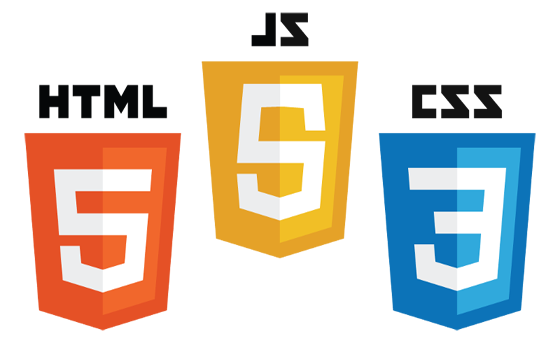
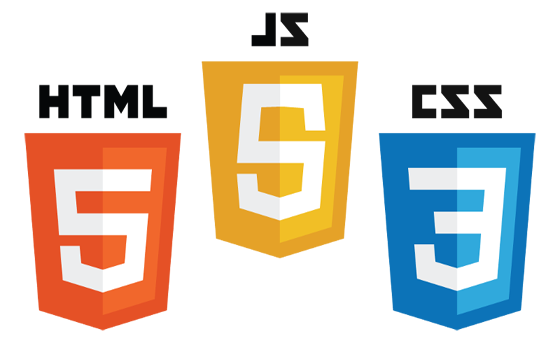
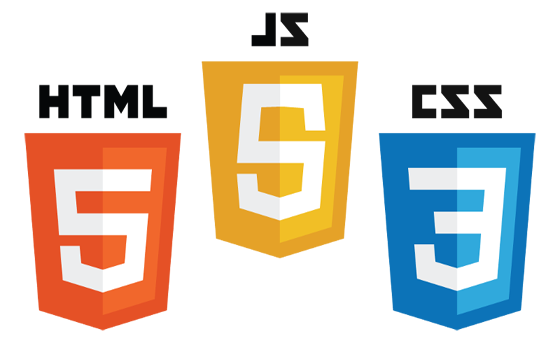

A propos de moi.
 

Je suis Martin, 20 ans, originaire de Martinique et étudiant dans le domaine du multimédia à Angoulême, ville de l'Image. Je crée des sites web interactifs, des vidéos (de l'écriture à la post-production) et il m'arrive aussi de créer quelques images, surtout en vectoriel.
Je suis pour un monde où les logiciels libres seraient légions et où un Internet libre verrait le jour ! Un peu d'utopie n'a jamais fait de mal à personne...
Je suis passionné par : la programmation, l'informatique en général, le jeu vidéo, la culture internet, le cinéma et enfin le patinage et la planche à voile.
